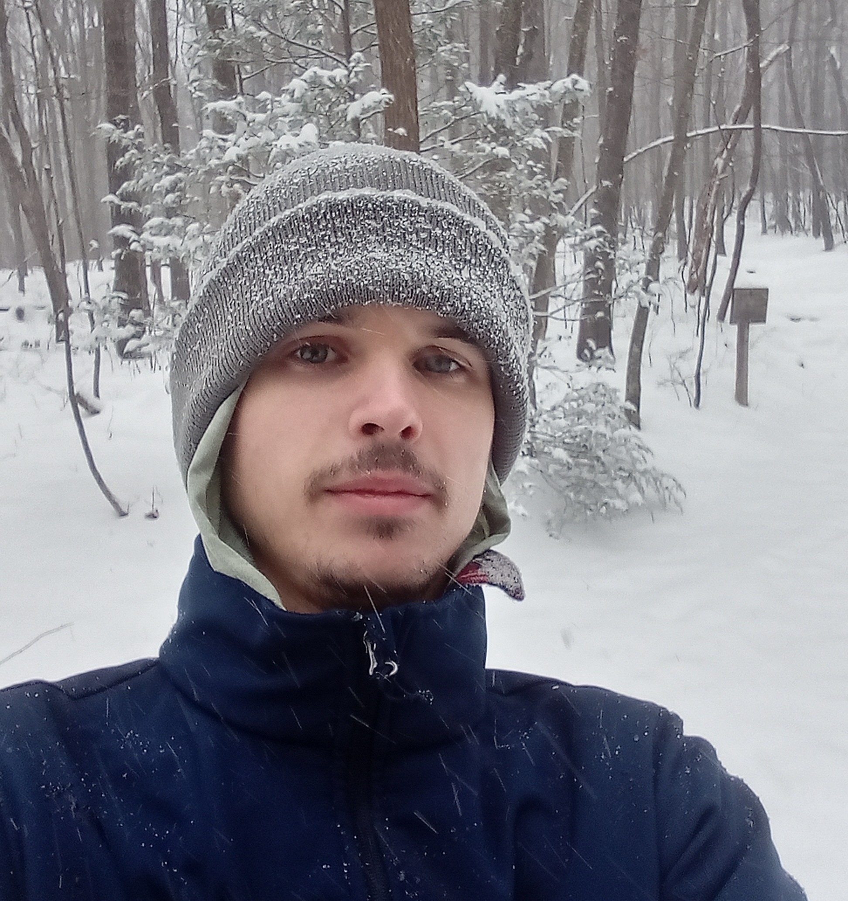

Hello, I am Charles. I am a mechanical engineering undergraduate at Virginia Commonwealth University. My studies focus on analysis of systems using Newtonian mechanics. Though my primary studies are centered around mechanical engineering, that is not the extent of my interests. I want to bring mathematics, computer science, and electrical engineering along with mechanical engineering together to build stronger solutions for robotics.
Prior to VCU, I worked as a robotics research intern at the University of Virginia where I worked with graduate students of diverse backrounds. From here I fell in love with research and robotics knowing that nothing else could satisfy my drive for discovery.
Research
I was introduced to the world of robotics research from an internship at the University of Virginia. Here I worked on various projects from small course vehicles to industrial grade UGVs, though my primary project was based around driving simulation. Working with one of the grad students, we repurposed a real vehicle's cab paired with a motion base to create a realistic driving environment. The role I served on the project included revitalizing the vehicle's computers to reanimate the cars interior. My work also involved interpreting computer simulation telemetry data to animate the tachometer for essential driving data.
Currently I am working on techniques for replicating surface textures of rock. The objective is to reduce cost by avoiding modern techniques involving 3D scanners and printers. Using physical techniques we can reduce cost and improve acuarcy by removing digalization which creates a loss of data from the real to digital conversion.